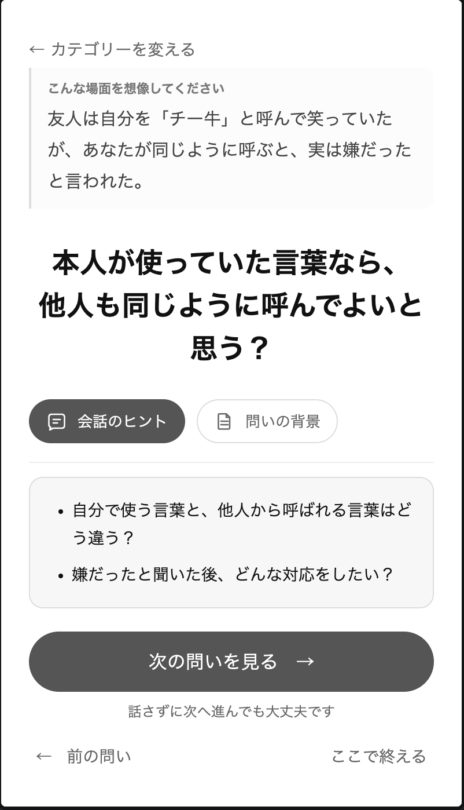

4つの話題カテゴリ

| 画面で選ぶカテゴリ | 扱う内容 | 内部Level |
|---|---|---|
| 日常や自分のこと | 友達・恋愛・普段の考え方について | 1 |
| 意見が分かれる身近な話 | 学校・人間関係・日常の判断について | 2 |
| 社会や価値観について | 社会制度・人権・倫理などについて | 3 |
| 人生に関わる難しい選択 | 自分が当事者だったらどう判断するか | 4 |
内部Levelと続け方
画面では話したいカテゴリを選び、内部では対応するLevelのJSONを読み込みます。質問データのcategoryは12の上位分類を表す編集用metadataで、ここにある4つの表示カテゴリとは別の項目です。
「社会や価値観について」「人生に関わる難しい選択」では、開始前に内容の確認画面が表示されます。進むか、戻って選び直すかを選べます。
事前の問題数選択はありません。「次の問いを見る」で読み進め、「前の問い」で戻り、終えたいときに「ここで終える」を選びます。
JSONファイル別の件数
| level1.json | 163件 |
|---|---|
| level2.json | 80件 |
| level3.json | 301件 |
| level4.json | 362件 |
| 合計 | 906件 |
2026-10-16確認。公開版のOmoiリポジトリmainブランチ（commit: fe24acc）のデータです。反映元は質問カタログでも確認できます。
質問画面の例

